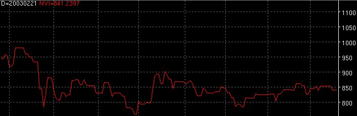

Volume Trends - VT
Volume trends is a collection of volume studies indicators. The user
can choose which volume study to use.

Parameters:
- Color - OBV color
- Line Type - OBV line type
- Label - The text to identify the OBV plot
- Method - The volume study used to generate the plot
- NVI - Negative Volume Index
- OBV - On Balance Volume
- PVI - Positive Volume Index
- PVT - Positive Volume Trend